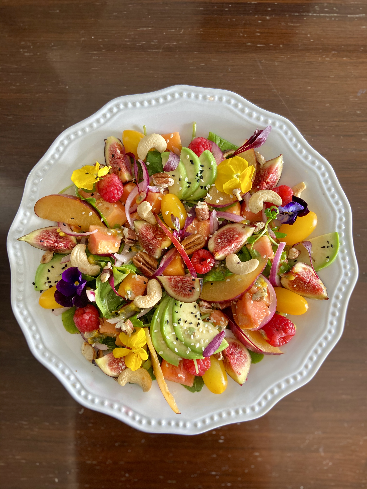
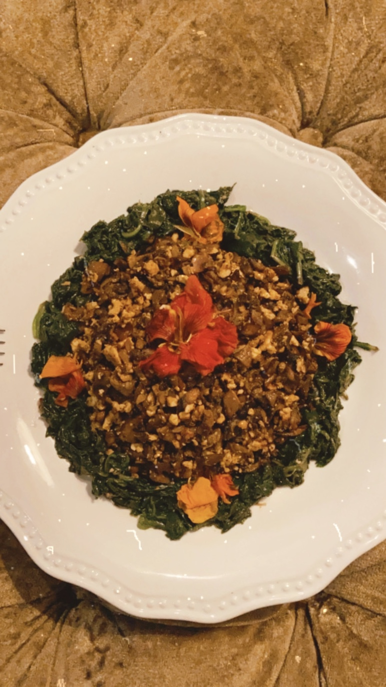
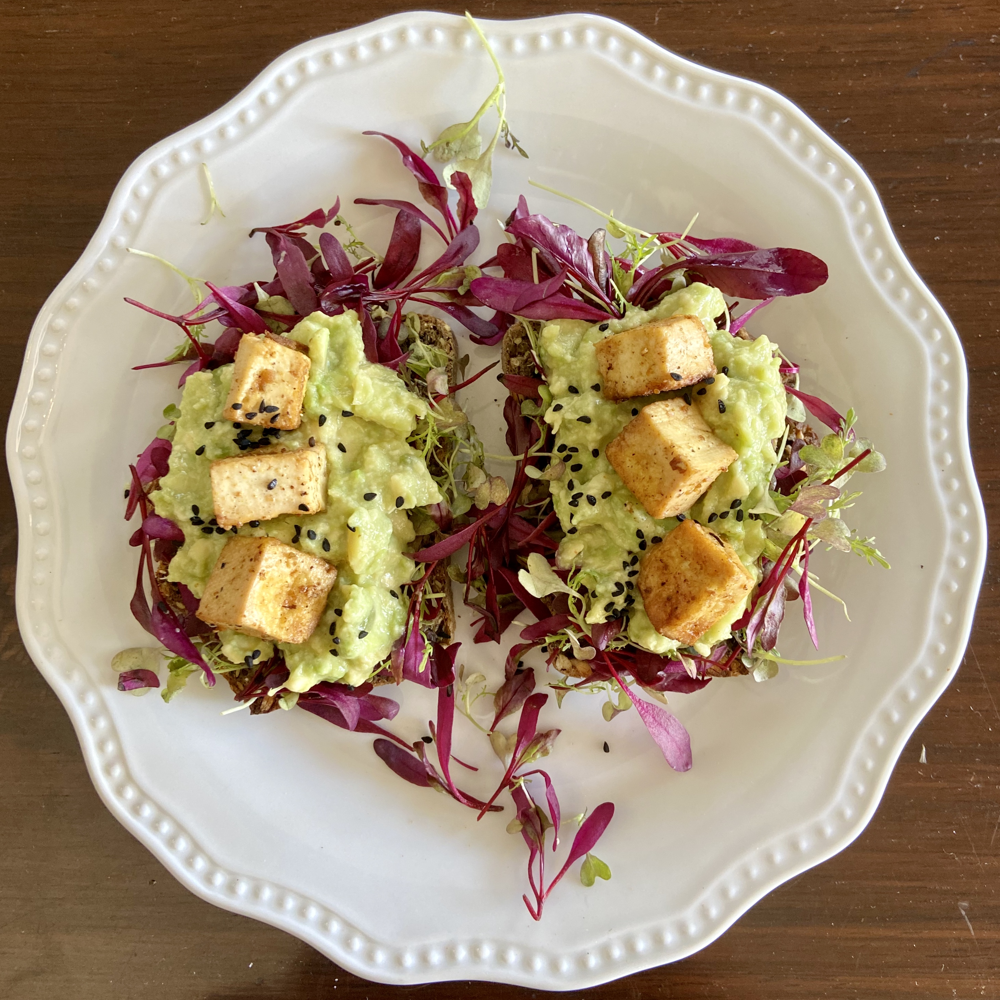
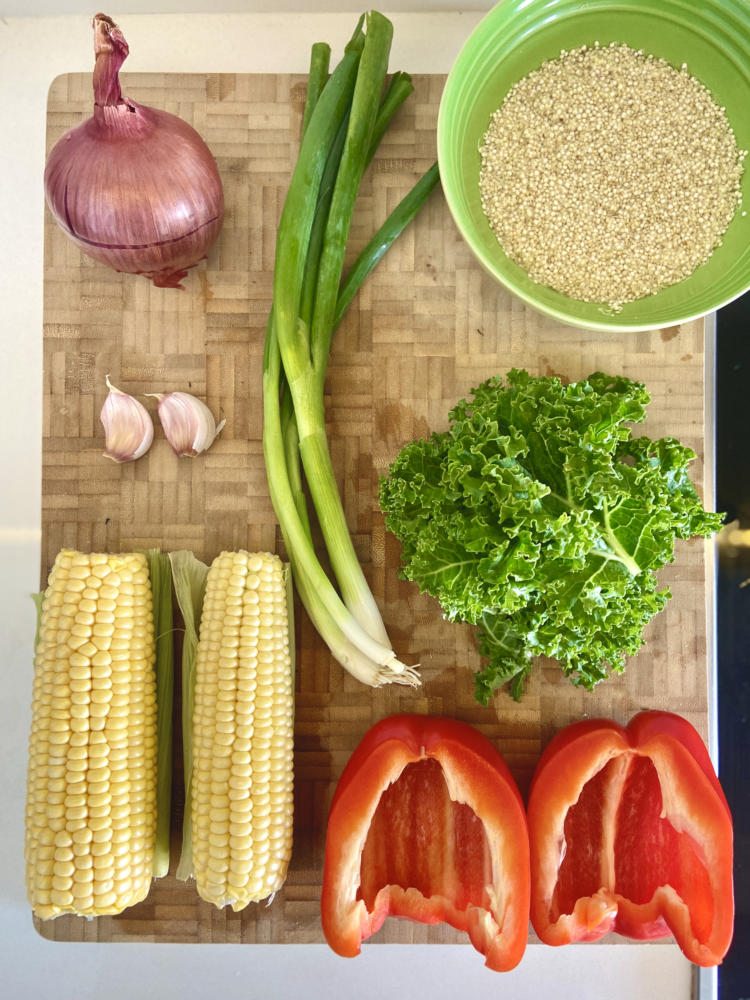
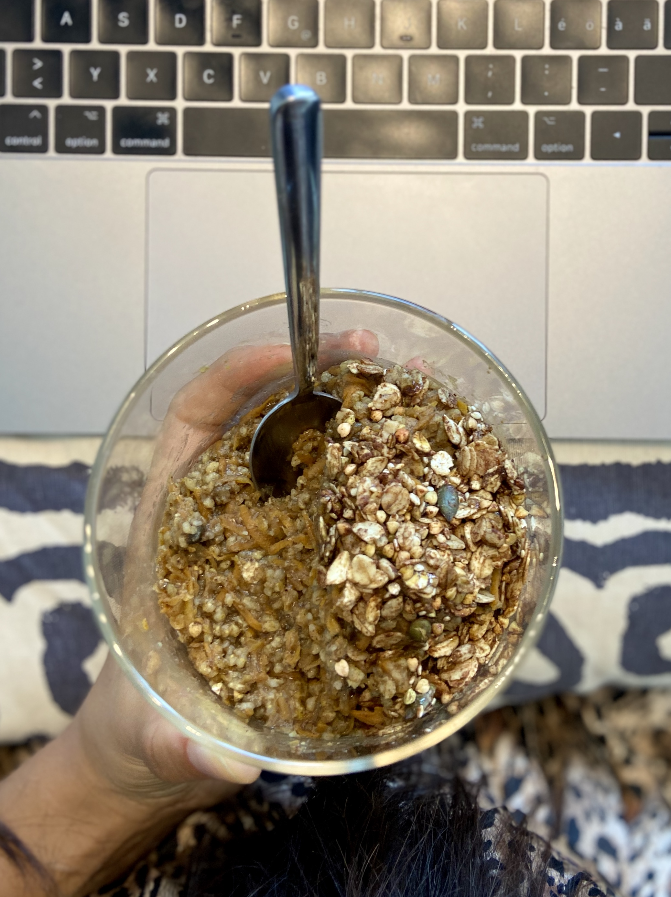
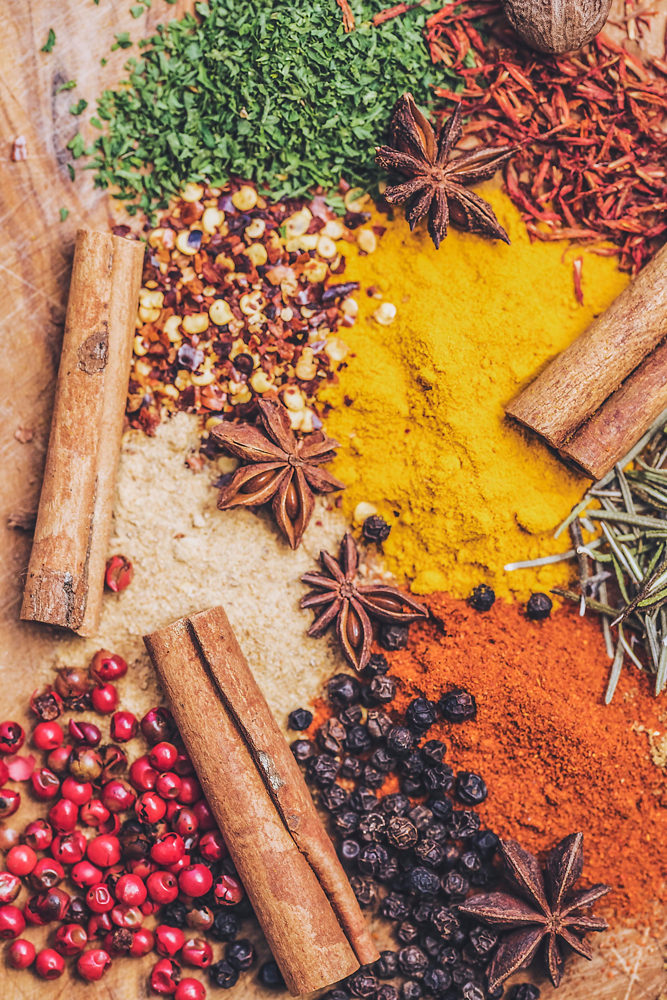
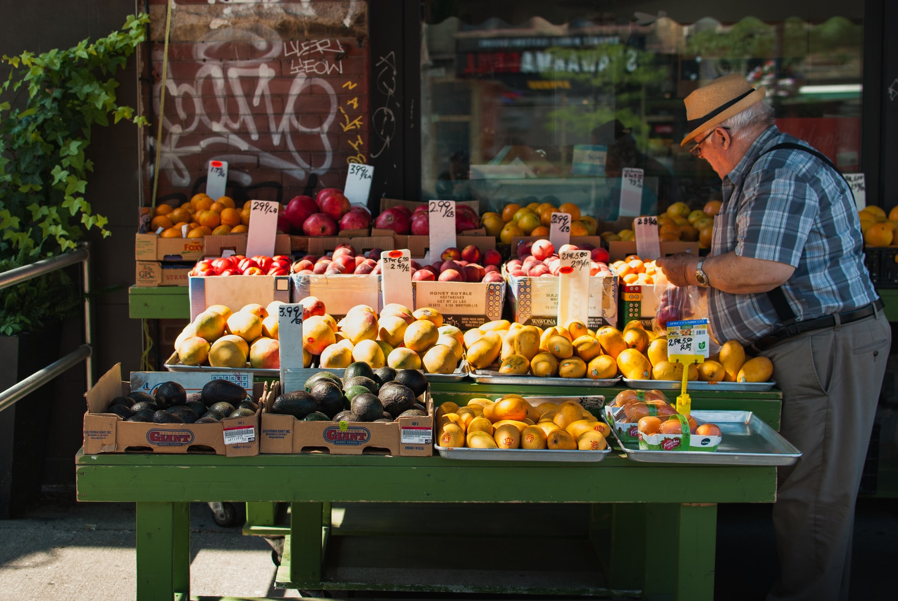

What I eat in a day
Breakfast

Lunch
Dinner
Snack
My favorite vegan recipes
Vegetables
Meat

Legumes

Grains
Fact and benefits of plantbased food

Colors / Why a colorful plate?
Each color provides various health benefits and no one color is superior to another, which is why a balance of all colors is most important. Getting the most phytonutrients also means eating the colorful skins, the richest sources of the phytonutrients, along with the paler flesh.

Spices / Which are my favorite ones.. and why?
Herbs and spices fight inflammation and reduce damage to your body’s cells

Plant based / How may it help?
Eating a plant-based diet improves the health of your gut so you are better able to absorb the nutrients from food that support your immune system and reduce inflammation.

Greens / What are their benefits..?
Eating a diet rich in leafy greens can offer numerous health benefits including reduced risk of obesity, heart disease, high blood pressure and mental decline..